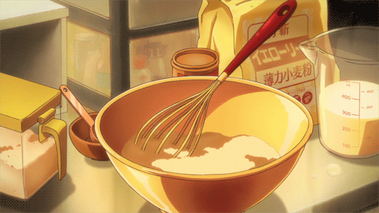

디저트가 좋지만, 돌아다니긴 귀찮아
달콤하고 부드러운 디저트 좋아하세요?
밥배, 후식배 따로 있다고 하듯 오늘날 많은 사람들이 디저트를 즐기는 것 같아요. 저 역시 디저트를 좋아해서 카페에 가는 걸 좋아해요. 그런데.. 반전인건 은근 전 ‘집순이’랍니다. 집에서 작은 취미활동을 하는 걸 좋아해요. 그러다 보니 예쁜 디저트를 먹고는 싶지만, 또 돌아다니긴 귀찮더라고요. 더군다나 이번에 코로나가 퍼지면서 쫄보인 전 더더욱 집안에 콕 있게 됐어요. 평소 베이킹을 좋아했었는데 이번 기회에 다양한 빵을 만들고 즐기기 위해 방학 동안 홈베이킹을 시작하게 되었답니다.
홈디저트족?

저처럼 집에서 홈베이킹을 즐기는 분들이 은근 많더라고요. 남이 만든걸 먹는것도 좋지만, 스스로 직접 만들어 먹고 다른 사람하고도 나누면 괜히 더 기분이 좋더라고요. 이런 기쁨을 즐기는 사람을 홈디저트족, 홈베이킹족이라고 한데요. 전 완전 홈디저트족인 것 같아요.
그런데 아직 베이킹을 접해보지 않은 사람들은 어렵게 느끼는 것 같아요. 이게 처음에는 어려워 보여도 기본적인 것들만 잘 지키면 카페 뺨치는 정도로 예쁘고 맛있는 걸 먹을 수 있어요. 공짜로ㅎㅎㅎ (물론 재료값...ㅠ) 아무튼 홈베이킹을 어렵게 생각하는 분들을 위해서 정말 기본적인 베이킹 레시피를 설명해보려해요. 바로 ‘파운드케이크’입니다. 베이킹에 관심 있는 분들 집중! 없는 분들도 집중! 파운드케이크 같이 만들어봐요.
파운드케이크, 넌 정체가 뭐니?

파운드케이크 다들 좋아하시나요? 화려하고 특별하지는 않지만, 사람들에게 오랫동안 사랑받는 빵 중 하나랍니다.
주요 재료인 버터, 설탕, 계란, 밀가루를 각각 1파운드씩 배합해서 만들기 시작했기에 이런 이름이 붙여졌답니다.
(즉 기본배합은 버터 : 설탕 : 계란 : 밀가루 = 1 : 1 : 1 : 1)
예전에는 각 재료를 모두 1파운드씩 넣어 빵을 만들었는데요, 모든 재료를 1파운드씩(약 453g) 섞어 만들게 되면 총 무게가 너무 무거워지게되요. 그래서 요즘에는 주 4가지 재료를 동량 또는 비슷하게 넣어 만든 케이크를 파운드케이크라고 부른답니다. 파운드케이크는 기본적인 빵으로 제작법이 단순하지만, 주의할 점이 있답니다.
어떤 부분을 주의해야 하는지 살펴봅시다.
파운드케이크, 주의사항
파운드케이크를 만드는 제법에는 3-4가지 정도 있지만, 보편적인 방법은 바로 '크림법'입니다. 크림법이란 버터를 부드럽게 포마드 상태로 풀어 설탕을 넣고 공기를 포집하는 법을 의미합니다. 크림법으로 파운드를 만들기 위해서는 주의할점이 있는데 바로 1)버터의 온도 2)계란 및 기타재료들의 온도 3)실내온도입니다.
온도가 중요한 이유는 반죽의 상태 때문입니다. 온도가 일정하지 않으면 반죽에 분리가 일어나는데 이러면 밀도감이 낮아지고 퍼석퍼석해져 맛이 없어집니다. 이로 반죽이 분리되지 않도록 하기 위해서는 모든 재료를 18-20도로 준비해줘야 합니다. 만약 겨울같이 실내온도가 낮은 경우에는 재료들을 전자레인지나, 따뜻한 물에 담가 준비해주면 되겠죠? 반죽의 온도에 조금만 신경 쓰면 쉽게 만들 수 있는 파운드케이크 그럼 진짜로 만들어봅시다.
파운드케이크, 이런게 필요해요
<틀 사이즈>
오란다 틀(대) 1개 분량 15.5*7.5*6.5cm
<사전 작업>
1. 각각의 재료는 모두 18-20도 사이로 맞춰주세요
2. 오란다 틀에 버터10g, 강력분2g을 섞어 발라 코팅해주세요
3. 버터 칠을 한 틀은 사용 전까지 냉장보관해주세요
<준비재료>
무염 버터 100g, 설탕 90g, 계란 100g, 박력분 100g, 베이킹파우더 3g, 생크림 30g, 바닐라빈 1개, 소금 1g
파운드케이크, 만들어봅시다
<레시피>
1. 실온 버터를 우선 부드럽게 풀어주세요. 이때 버터의 온도는 눌러보았을 때 약간 부드럽게 눌러지는 18-20도 상태가 좋습니다. 잘 풀어진 버터에 소금을 넣고 설탕을 3-4번 나눠 넣어 휘핑해줍니다. 휘핑은 버터의 색이 처음보다 하얗게 밝아지고 부피가 1.5배 증가할 때까지 해줍니다.
2. 버터와 마찬가지로 18-20도 상태의 계란을 반죽에 넣어줍니다. 이때 계란은 반드시 10번에 나눠 소량으로 넣어 휘핑해줘야 합니다. 계란을 넣는 과정에서 반죽 분리가 잘 일어나는데요, 먼저 넣은 계란을 잘 섞은 후에 다음번 계란을 조금씩 넣어주면 유화가 잘된 반죽을 만들 수 있습니다. (중간중간 벽에 묻은 재료들은 주걱으로 긁어 모아주세요)
3. 버터와 계란에 박력분과 베이킹파우더를 체쳐 넣고, 반죽이 꺼지지 않도록 주걱을 세워 가볍게 섞어주세요.
4. 20-25도 사이의 생크림과 바닐라빈을 넣어 반죽이 덩어리없이 크림같이 매끈해지도록 잘 섞어주세요.
5. 미리 버터칠을 해 둔 틀에 반죽을 담고, 기포를 없애기 위해 바닥에 내리쳐줍니다.
그 후 주걱으로 양옆은 높게 가운데는 오목하게 만들어주고 버터를 한줄 짜주세요. 버터를 짜주면 파운드케이크가 부풀 때 예쁘게 터진답니다.
6. 160도로 예열한 오븐에 넣고 160도에서 40분 구워줍니다. 봉긋하게 올라온 부분에 물기가 없이 말라있다면 모두 구워진 상태랍니다. 굽는 시간은 오븐 사양에 따라 다르기 때문에 상태를 확인하면서 조정해주세요.
7. 다 익은 파운드는 틀에서 꺼내 식힘망 위에서 식혀주세요.
8. 파운드케이크는 만든 당일에 먹는 것보다 하루정도 랩으로 싸서 숙성시킨 후 먹는게 더 맛있답니다.
랩으로 싸서 시원한 곳에 하루 보관해주세요. 이러면 촉촉한 식감을 느낄 수 있어요.
파운드케이크, 생각보다 쉽네~
파운드케이크 생각보다 쉽지 않나요? 카페 인기메뉴 빵 중 하나인데, 집에서도 간편하게 만들어 볼 수 있어요. 파운드케이크의 질감은 다른 케이크에 비해 조금 퍽퍽하고 무거운 편이기 때문에 다양한 음료와 같이 곁들여 먹으면 좋아요. 저는 파운드케이크 + 흰 우유 조합을 추천합니다👍🏻
다른 맛으로 즐기고 싶다면 재료를 추가로 넣어 다양하게 즐길 수도 있어요. 저는 오늘 기본 중에 기본인 바닐라빈 파운드케이크를 만들어봤는데 말차 가루, 얼그레이 가루, 코코아 가루, 견과류 등 추가로 재료를 넣어 색다르게 즐겨봐도 좋아요. 추가 재료를 넣는 시점은 반죽 완성의 끝 무렵, 생크림을 넣는 시점에 같이 넣어주면 된답니다~ 그럼 모두 맛있는 파운드 즐기세요~
파운드케이크, 먹는 날
다음날 하루 숙성시킨 파운드를 엽니다. 긴장되는 순간..ㅎ
케이크 위에 이렇게 슈가파우더를 샤샤샥 뿌려주면 파운드 케이크 먹을 준비 끝! 너무 맛있어요...ㅠ
반죽의 분리 없이 잘 된 반죽은 이렇게 속 안이 꽉 밀도 있게 차 있어요! 보이시죠?ㅎㅎ
여러분도 파운드케이크 한번 도전해보세요!
<참고자료>
image
https://anime--food.tumblr.com/image/178244335116
https://weheartit.com/entry/283596849
https://www.instiz.net/pt/624254
music
Hibernia Sleep-Daniel Kaede
Distant Fortune-Daniel Kaede
Sunday Smile-Bireli Snow